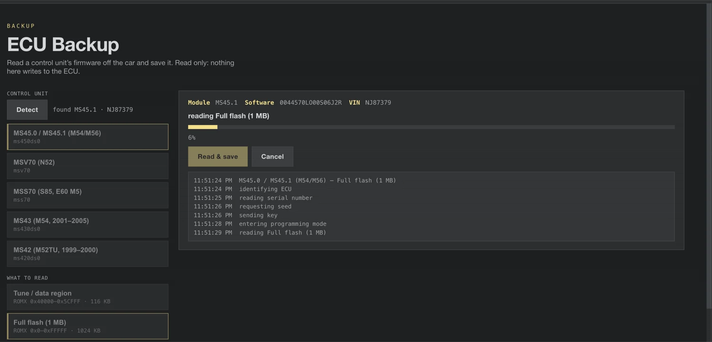
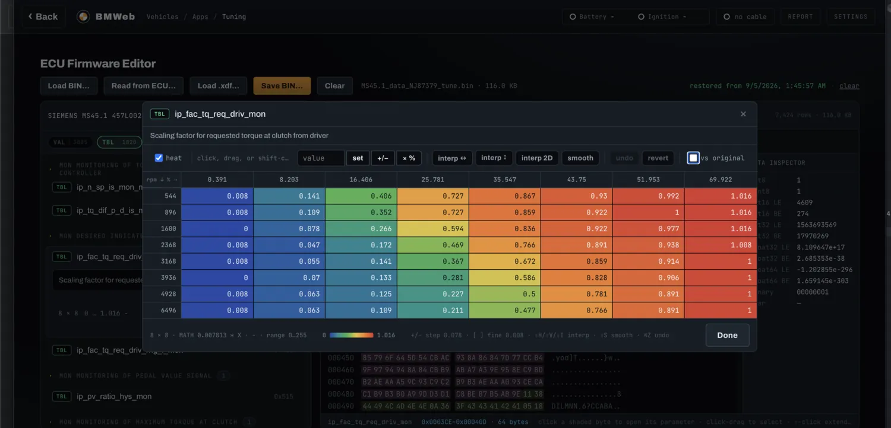

Your BMW keeps a list of what's wrong. Read it in your browser.
Plug a $20 cable into your 1996 to 2006 BMW, open BMWeb in Chrome, and see what the dealer's computer sees: fault codes in plain English, live engine data, component tests. Free, nothing to install.
Open BMWeb E36, E39, E46, E53, E85 and more
MS45.1 for M54 E46, engine
cable: K+DCAN
MS45 read fault memory════════════════════════════════════════Error 1(3) Nr: 10179 Thermal oil level sensor type of error Signal or value above threshold status Currently present, OBD confirmed MIL Fault turns the warning lamp onError 2(3) Nr: 10005 O2 sensor heater, pre-cat, bank 2 type of error Open circuit status Not currently presentError 3(3) Nr: 10080 Secondary air system type of error Flow too low status Not currently presentEndOfListFS_LESEN OKAY
Inside BMWeb
Every screen, in pictures






What you need
- A K+DCAN cable, about $20The common USB diagnostic cable for these BMWs, sold everywhere online.
- A 1996 to 2006 BMW3, 5 and 7 Series, X3, X5, Z4 and more. The cable plugs into the round port under the hood or the OBD port by your knee.
- Chrome or Edge on a computerThat's it. No Windows, no INPA install, no virtual machine.
How it goes
- 1Plug in the cable.One end in the car, the other in your computer. Turn the ignition on.
- 2Open BMWeb and pick your car.Choose your model, and allow the cable when the browser asks.
- 3Read your car.Scan every module for faults, watch live data, or test components. The same screens BMW technicians used.
Common questions
- Is it safe to poke around?
- Reading is completely safe, you're only listening. Anything that changes the car asks you first.
- Does it cost anything?
- No. BMWeb is free and open source. Your only cost is the cable.
- Will it work on my phone?
- For everything that does not touch the car. Download the offline zip and open it in Microsoft Edge (iPhone and Android are both supported) for fault lookup, wiring diagrams, documents and parts. Talking to the car needs the K+DCAN cable and a desktop browser with Web Serial, which phones do not have.
- Do I need internet at the car?
- Only the first time. Once BMWeb has loaded, it works offline, and there are offline downloads too.